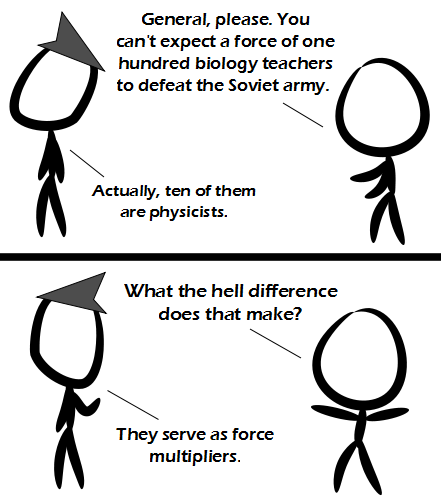

Comic JK 930
When I Feel Like It
⇤
<
?
>
⇥

⇤
<
?
>
⇥
Forum
.
RSS
.
Digg
.
Facebook
.
Reddit
.
Twitter
.
Stumbleupon
Enter your thoughts on number 930 here. Please, no spamming, trolling, or taking summer vacations. Just add your mother to the mix as she serves as a weight multiplier and you can't lose! You don't say? You don't say? You don't say? You don't say? Aww, a joke about scalars without obvious puns. > ìWhat do you get when you cross a mosquito and a mountain climber?î >> ìNothing, you canít cross a vector and a scale-rî >>>+1! Thatís unpossible, even for a computer. > Impossible, because the Soviet army no longer exists. >>the Russian Navy however is still formidable... ( and that comment would make more sense if YouTube hadnít removed all copies of Michael Palin singing "Polyushka Polye"ù with the choir of the Russian Pacific Fleet... ) I assume ìforce multiplierî is something related to physics. >You don't say? > YOU'RE PROBABLY RIGHT! LOL! >> Hey! Who correcting my deliberately incorrect grammars? > It has definitions in both physics and military concepts. > Google is your friend. >>except my friends donít spend most of their time trying to show me adverts, and persist in trying to find out more about me so they can show me even more adverts... >>> Do you want a faster browser? INSTALL Lynx TODAY! Are you sure you donít want to install Lynx ? Want to translate something? Why not install Lynx instead? Why watch Youtube videos when you could be installing Lynx? Checking your connection speed? It would be faster if you installed Lynx! Come on, why havenít you installed Lynx? It just takes a few seconds! INSTALL LYNX NOW. (btw Opera 12 just came out a few days ago) >>>>>I did actually test speed test with Firefox and Lynx - Lynx was about 30% faster. (www.att.communist/speedtest/) >>>>>> Thatís only communist propaganda. >>>>>> But Opera beats a potato: youtu.be/zaT7thTxyq8 >>>>>>> Still waiting for it to download. >>>>Can't argue with the Lynx edit... After 91 there would be no Soviet force and no need for 100 teachers to go up against it... >Yeah, and physicists donít actually increase military force!(?) >>tell that to Oppenheimer or Teller... Okay - Who the heck has the browser thatís so shitty, it replaces quote characters that you DIDN'T TYPE with shitty non-compatible unicode garbage? Please, change your settings to not do that. How the hell do you live with such a shitty browser setting? >> I shudder at the thought that maybe itís a new kind of troll! > How the hell do you live with a browser that canít support Unicode? >> My browser DOES support unicode - just not in this text box. I still want to know how one can live with a browser that performs automatic char conversions which have no purpose other than to break text. >>>I'm agreed. >>>>> This textbox uses monospace font family. Your system/browser is just lacking Unicode monospace support. >>>>>> That still doesn't convince me that there's any tangible advantage to slanted quote characters. >>>>> Something changed here.... now the new chars are ones which actually display correctly, but still non-ascii. I think someone fixed their char encoding, and now it's slightly less annoying. >>>>>> Which characters do you see as annoying? I don't see anything unordinary. >>>>>>> These are non-ascii: ì î í These are good: ' " For a time, someone's browser was replacing them with similar but less supported quote chars. It's better now. ********************! I'm offended! *delete delete*. Mommy, please make the mean commenters stop! >Stop whining! >> Stop deleting! >>>I'm not!